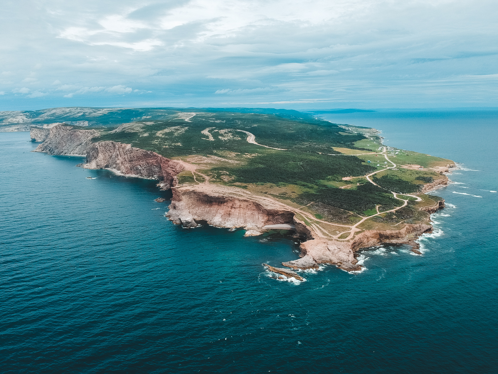

Beautiful Place
Newfoundland & Labrador
I have lived here for more than 7 years, It's beautiful place to live



Newfoundland & Labrador
I have lived here for more than 7 years, It's beautiful place to live